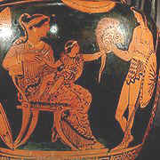

Human Gesture
Great writers reveal character through small gestures rather than explicit description or mannered speech, as when the dying Lear says, 'pray you, undo this button,' or Hector removes his helmet fearful that it will frighten his son, Astyanax. [or when Colonel Bodders rattles the ice in his empty glass at a passing waiter in Cities on the River.]

Dickens used small gestures as the most economical way to reveal character (rather than grand speech and elaborate description), thus anticipating the technique of montage and illustration used in the movie.
"We are weak creatures," said Mrs. Corney, laying down a general principle.
"So we are," said the Beadle.
Nothing was said on either side, for a minute or two.afterwards. By the expiration of that time, Mr. Bumble had illustrated the position by removing his left arm from the back of Mrs. Corney's chair, where it had previously rested, to Mrs. Corney's apron-string, round which it gradually became entwined.
"We are weak creatures," said Mr. Bumble.– Dickens dialogue, Adam Thirlwell, The New Republic, December 2009
Etherialization
"Mr. Wells' failure [to understand etherialization] may be measured by Shakespeare's success in solving the same problem. If we arrange the outstanding characters of the great Shakespearian gallery in an ascending order of etherialization, and if we bear in mind that the playwright's technique is to reveal characters by displaying personalities in action, we shall observe that, as Shakespeare moves upward from the lower to the higher levels in our character-scale, he constantly shifts the field of action in which he makes the hero of each drama play his part, giving the Microcosm an ever larger share of the stage and pushing the Macrocosm ever farther into the background. We can verify this fact if we follow the series from Henry V through Macbeth to Hamlet. The relatively primitive character of Henry V is revealed almost entirely in his responses to challenges from the human environment around him: in his relations with his boon companions and with his father and in his communication of his own high courage to his comrades-in-arms on the morning of Agincourt and in his impetuous wooing of Princess Kate. When we pass to Macbeth, we find the scene of action shifting; for Macbeth's relations with Malcolm or Macduff, or even with Lady Macbeth, are equalled in importance by the hero's relations with himself. Finally, when we come to Hamlet, we see him allowing the Macrocosm almost to fade away, until the hero's relations with his father's murderers, with his spent flame Ophelia and with his outgrown mentor Horatio become absorbed into the internal conflict which is working itself out in the hero's own soul. In Hamlet the field of action has been transferred from the Macrocosm to the Microcosm almost completely; and in this masterpiece of Shakespeare's art, as in Aeschylus's Prometheus or in Browning's dramatic monologues, a single actor virtually monopolizes the stage in order to leave the greater scope for action to the surging spiritual forces which this one personality holds within itself.
"This transference of the field of action, which we discern in Shakespeare's presentation of his heroes when we arrange them in an ascending order of spiritual growth, can also be discerned in the histories of civilizations. Here too, when a series of responses to challenges accumulates into a growth, we shall find, as this growth proceeds, that the field of action is shifting all the time from the external environment into the interior of the society's own body social."
p.201, A Study of History by Arnold Toynbee
.